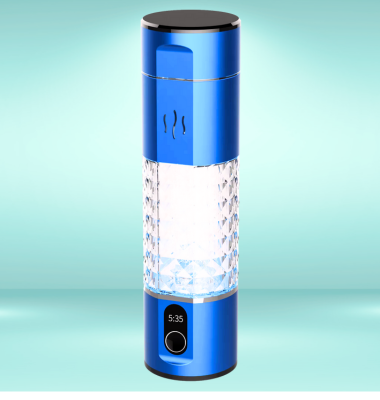

Hydrogen Bottle
AlkaViva Hi-Output H₂ Bottle
Kompakte High-Output-Hydrogenflasche aus dem australischen AlkaViva-Sortiment.
Preis auf Anfrage
Veröffentlichte Daten
| H₂-Angabe | bis 5.000 ppb laut Produkttitel |
| Volumen | 210 ml laut Produkt-URL |
| Produkttyp | Portable Hydrogen-Wasserflasche |
| Datenstatus | Die offizielle Seite war bei der Recherche nicht vollständig auslesbar; weitere Werte wurden nicht geschätzt. |